Ejercicio 1: Distribución de los centros de salud en la región de San Luis#
Características del ejercicio#
Objetivo del ejercicio:
Familiarizarse con distintos tipos de herramientas de geoprocesamiento y análisis espacial. Comprender el proceso de descubrimiento de relaciones y conexiones entre entidades en datos espaciales.
Tipo de ejercicio de capacitación:
Este ejercicio puede utilizarse tanto en la capacitación en línea como en la presencial.
Puede realizarse como ejercicio guiado o individualmente a modo de autoestudio.
Grupo focal (Nivel de conocimientos SIG):
Estas habilidades son relevantes para:
Duración estimada del ejercicio:
Artículos relevantes en Wiki:
Instrucciones para capacitadores#
Rincón del instructor
Preparar la capacitación
Tómese su tiempo para familiarizarse con el ejercicio y el material proporcionado.
Prepare una pizarra. Puede ser una pizarra blanca física, un rotafolio o una pizarra digital (por ejemplo, una pizarra Miro) donde los participantes puedan añadir sus conclusiones y preguntas.
Antes de comenzar el ejercicio, asegúrese de que todos hayan instalado QGIS y hayan descargado y descomprimido la carpeta de datos.
Consulte ¿Cómo realizar capacitaciones? para obtener algunos consejos generales para impartirlas.
Impartir la capacitación
Introducción:
Presente la idea y el objetivo del ejercicio.
Proporcione el enlace de descarga y asegúrese de que todos los participantes hayan descomprimido la carpeta antes de comenzar las tareas.
Guía paso a paso:
Muestre cada paso y explíquelo al menos dos veces y de manera pausada para que todos puedan ver lo que está haciendo y aplicarlo en su propio proyecto de QGIS.
Pregunte con regularidad si alguien necesita ayuda o si todos están siguiendo el ejercicio, para asegurarse de que todos comprenden y realizan los pasos por sí mismos.
Mantenga una actitud abierta y paciente ante cualquier pregunta o problema que pueda surgir. Los participantes están haciendo varias tareas a la vez: prestan atención a sus instrucciones y las aplican en su propio proyecto de QGIS.
Cierre de la sesión:
Dedique tiempo al final del ejercicio a cualquier problema o pregunta relacionada con las tareas que pueda surgir.
Reserve algo de tiempo para preguntas abiertas.
Datos#
Descargue los conjuntos de datos aquí y descomprima los archivos.
Hint
Todos los archivos conservan sus nombres originales. No obstante, no dude en modificar sus nombres si fuera necesario para identificarlos más fácilmente.
Tarea#
El objetivo de este ejercicio será evaluar la distribución de los centros de salud en la región de Saint Louis, en Senegal, y determinar qué centros de salud son propensos a las inundaciones.
Hint
El sistema de coordenadas previsto para Senegal es EPSG:32628 WGS 84 / UTM zone 28N
Cargue la capa de centros de salud (
sen_healthsites.shp) y los datos de límites administrativos (sen_admbnda_adm1_1m_gov_ocha_20190426.shp) en su proyecto QGIS. Añada OpenStreetMap como capa de fondo (sugerencia: XYZ a través de la ventana del navegador o del complemento QuickMapServices).
Attention
Asegúrese siempre de que sus conjuntos de datos se ponen en la proyección correcta. Si no es el caso, es necesario reproyectar los datos en el sistema de referencia de coordenadas deseado. Para obtener más información, consulte la entrada de Wiki sobre proyecciones cartográficas.
Seleccione todos los centros de salud situados en la región de San Luis:
Seleccione la región
Saint Louisen la capa límite. Puede seleccionar manualmente las filas específicas. Para obtener más información, consulte la entrada de Wiki sobre consultas espaciales.Guarde la selección con el nuevo nombre
Saint_Louis_regionen una capa adicional. Para ello, haga clic con el botón derecho en la capa límite –>Export–>Save Selected Features As...
{kind=link}
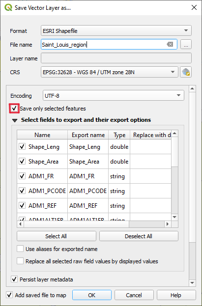
Captura de pantalla de cómo exportar las entidades seleccionadas#
Utilice la herramienta
Select by locationo
Clippara seleccionar todos los centros de salud dentro de la capaSaint_Louis_region.Guarde la nueva selección con el nuevo nombre
healthsites_Saint_Louisen una capa adicional (sugerencia: haga clic con el botón derecho sobre la capa, Exportar, etc.).
{kind=link}
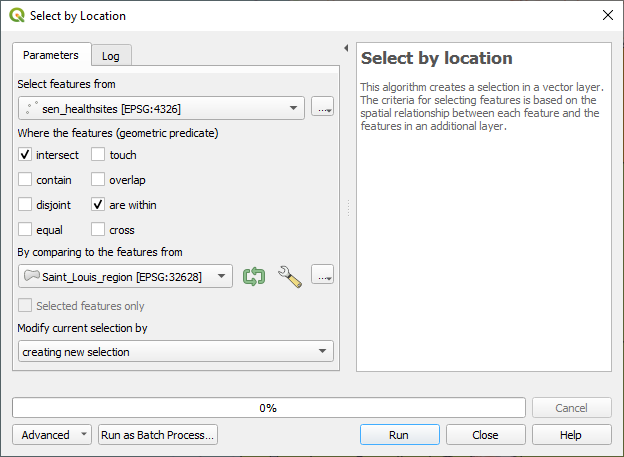
Captura de pantalla de la herramienta de selección por ubicación#
Investigue el riesgo de inundación en San Luis. Tras la selección satisfactoria de todos los centros de salud de la región de San Luis en el paso anterior, proceda a cargar la capa de extensión de la inundación de San Luis en QGIS:
Añada la capa de extensión de la inundación (
EO4SD_SAINT_LOUIS_FLOOD_2018.shp)Aunque la capa no cubre la totalidad de la región de San Luis, se extiende más allá de San Luis en el norte. Utilice la herramienta
Clippara recortar la capa de extensión de la inundación a la región de San Luis (sugerencia: como entrada utilice la extensión de la inundación de San Luis, utilice Saint_louis_region como superposición) para un enfoque más concentrado en el centro de San Luis. Para obtener más información, consulte la entrada de Wiki sobre geoprocesamiento.Guarde la selección como
Saint_Louis_flood_clipped.
Al consultar la tabla de atributos de la capa
Saint_Louis_flood_clipped(columna Watertype), verá que la capa incluye zonas inundadas, no inundadas y masas de agua.
{kind=link}
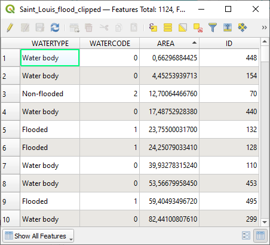
Captura de pantalla de la capa Saint_Louis_flood_clipped#
Visualice solo las zonas inundadas y las masas de agua del conjunto de datos:
Vaya a
Symbologyy cambie la primera selección de “Símbolos individuales” aCategorized.Seleccione la columna
Watertypey haga clic enClassify.Elija colores diferentes para las masas de agua y las zonas inundadas. Deje las zonas no inundadas sin marcar o hágalas transparentes (opacidad = 0%).
Exploración visual: ¿Qué zonas son más y menos propensas a las inundaciones?
{kind=link}
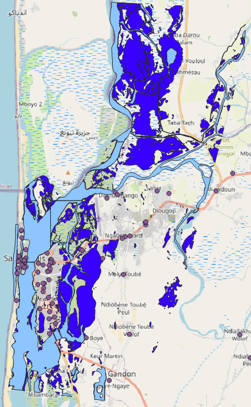
Captura de pantalla de las masas de agua y las zonas inundadas#
Evalúe qué centros de salud están expuestos al riesgo de inundación.
Utilice la herramienta
Select by expressionpara seleccionar todas las zonas inundadas en la capaSaint_Louis_flood_clipped. Puede acceder a esta herramienta a través de la tabla de atributos haciendo clic en este símbolo
{kind=link}
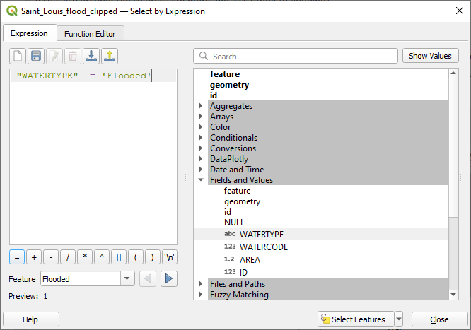
Captura de pantalla de la herramienta Seleccionar por expresión#
Guarde la selección en una capa separada. Nómbrelo
Saint_Louis_flooded_areas.Ahora puede eliminar la capa
Saint_Louis_flood_clippedpara evitar confusiones.Utilice la herramienta
Select by locationpara evaluar qué centros de salud son propensos a las inundaciones por estar situados dentro de las zonas inundadas de San Luis (sugerencia: Seleccione las entidades de:healthsites_Saint_Louis; comparando con:Saint_Louis_flooded_areas).
{kind=link}
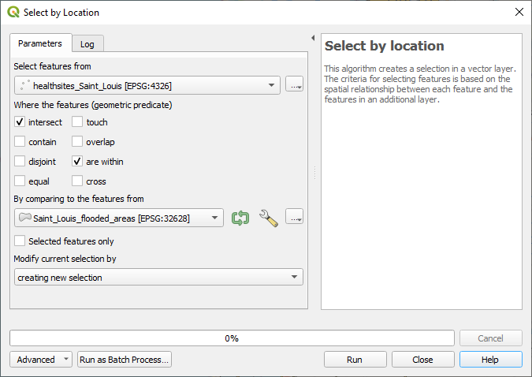
Captura de pantalla de la herramienta Seleccionar por ubicación#
Compruebe la tabla de atributos de la capa
healthsitespara las entidades seleccionadas: una farmacia y un hospital.
{kind=link}
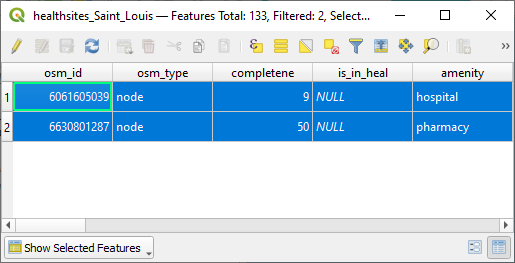
Captura de pantalla de los centros de salud seleccionados en las zonas inundadas#
¿Qué centros de salud están situados cerca de zonas inundadas?
Cree una zona de influencia alrededor de los centros de salud de San Luis con una distancia de
20 meters. Para obtener más información, consulte la entrada de Wiki sobre geoprocesamiento.
{kind=link}
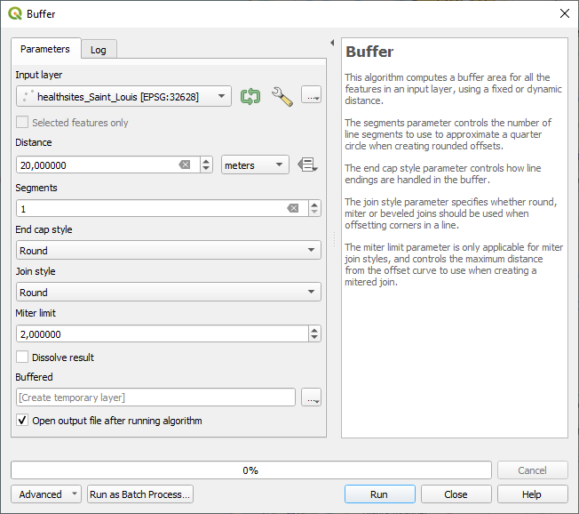
Captura de pantalla del proceso de zona de influencia#
Hint
A más tardar en esta fase, recibirá un recordatorio de que debe reproyectar las capas. Las zona de influencia significativas solo pueden calcularse en sistemas de coordenadas proyectadas. El sistema de coordenadas previsto para Senegal es EPSG:32628 WGS 84 / UTM zone 28N
Ahora vuelva a utilizar la herramienta
Select by locationpara evaluar qué zonas de influencia se intersecan con las zonas inundadas.
{kind=link}
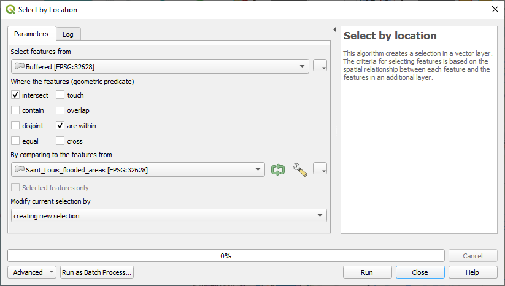
Captura de pantalla de la herramienta Seleccionar por ubicación para las zonas de influencia#
¿Cuántos centros de salud se seleccionaron? Compruebe la tabla de atributos. La selección debe incluir cinco farmacias y un hospital.
No dude en experimentar con distancias de zona de influencia adicionales.
{kind=link}
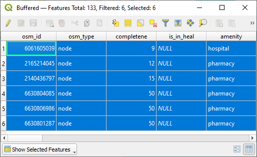
Captura de pantalla de los centros de salud seleccionados en las zonas inundadas#
El resultado final puede representarse del siguiente modo: mostrará las zonas inundadas, los centros de salud de la zona de influencia y las intersecciones entre ellos. Aunque estas entidades no sean fácilmente visibles en QGIS, puede comprobar que todo ha funcionado correctamente consultando la tabla de atributos.
{kind=link}
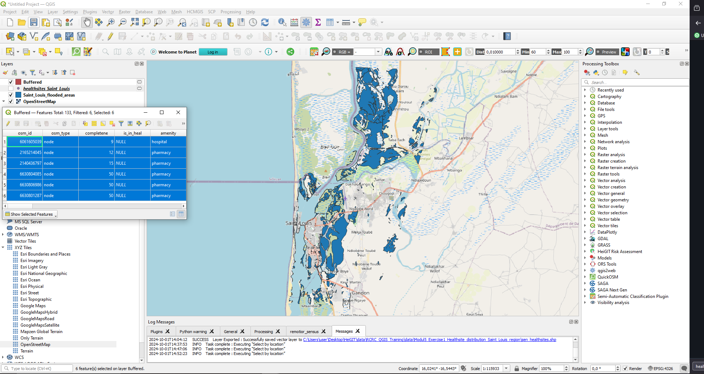
Captura de pantalla del resultado final#